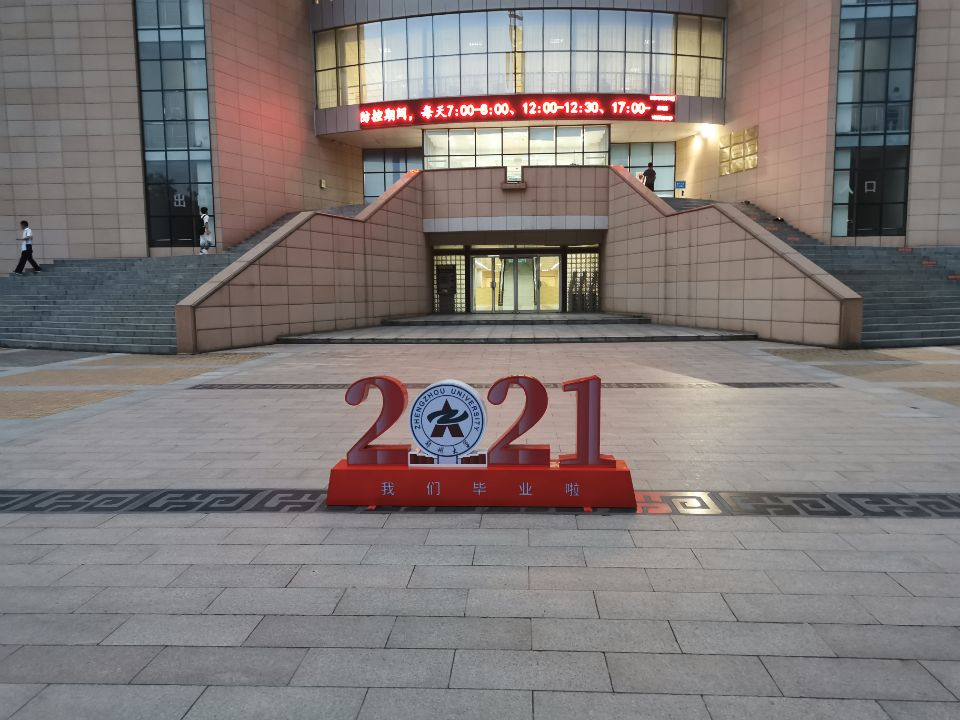
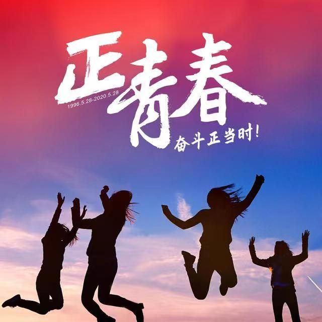

青春不常在，奋斗正当时
“当代中国青年是与新时代同向同行、共同前进的一代，生逢盛世，肩负重任。”——习近平 “广大青年要肩负历史使命，坚定前进信心，立大志、明大德、成大才、担大任，努力成为堪当民族复兴重任的时代新人，让青春在为祖国、为民族、为人民、为人类的不懈奋斗中绽放绚丽之花。”习近平总书记对青年人的寄语铿锵有力。 如今的中国正处于百年未有之大变局中，如今的新青年同样面对着时代风云、家国重任、个人道路的选择。 新时代中国青年运动的主题，新时代中国青年运动的方向，新时代中国青年的使命，就是坚持中国共产党领导，同人民一道，为实现“两个一百年”奋斗目标、实现中华民族伟大复兴的中国梦而奋斗。只有心怀“国之大者”，才能担当民族复兴重任。 国家的希望在青年，民族的未来在青年。青年理想远大、信念坚定，是一个国家、一个民族无坚不摧的前进动力。青年志存高远，就能激发奋进潜力，青春岁月就不会像无舵之舟漂泊不定。正所谓“立志而圣则圣矣，立志而贤则贤矣”。
“少年智则国智，少年富则国富，少年强则国强，少年独立则国独立，少年自由则国自由，少年进步则国进步，少年胜于欧洲则国胜于欧洲，少年雄于地球则国雄于地球。”梁启超当年的预言，言犹在耳。 在知乎上，有人留言：“以前，我以为五四只是历史书上必背的一个考点，而从未理解它的真正意义。今天，穿越百年，先辈们给予的勇气和信仰依然存在。相信新一代的有志青年，会带着无比坚定的心奔向另一个百年！” 春风浩荡之中，五四精神正在神州大地上荡漾、奔涌。在这片神奇的土地上，每一个春天都永远铭刻着五四的记忆，每一代新青年都眼中有光、心中有梦、肩负家国情怀赋予的责任与信仰…… 百年风云且翻涌，革命自有后来人。 今天的新青年们，脚下依然有千山万水，前路也依然有艰难险阻，他们在为实现“两个一百年”奋斗目标、实现中华民族伟大复兴的中国梦而奋起；他们敢在真刀真枪的实干中成就一番事业；他们必将书写和咏唱无愧前人、无愧时代、无愧人民的青春之歌。歌声中一定会有这样一句： 革命人永远是年轻……
觉醒
1919年5月4日，来自北京10多所学校的3000多名学生齐集天安门，举行声势浩大的反帝爱国大游行。黑发白衫的少年们，走上街头，强烈要求拒签巴黎和约，惩办卖国贼。游行受阻后，学生们转赴东交民巷，火烧赵家楼。 “今日各校学生游街，复赴曹汝霖家，因阻止入内打破电灯，曹宅焚毁、学生数人被捕”“章宗祥在曹宅受伤甚重”“北京学生界发表宣言书，联合各校一致行动，为露天演说唤醒国民……”5月5日在上海出版的《新申报》推出号外，报道五四运动爆发。 青春的火焰燃烧，只因深深的爱——爱祖国，爱中华民族上下五千年的灿烂文明，爱脚下这片厚重而沧桑的土地。五四运动，是一场伟大的爱国主义运动！ 爱国主义是我们民族精神的核心，是中华民族团结奋斗、自强不息的精神纽带。五四运动时，面对国家和民族生死存亡，一批爱国青年挺身而出，全国民众奋起抗争，誓言“国土不可断送、人民不可低头”，奏响了浩气长存的爱国主义壮歌。 这份情感之纯粹、之浓烈，超越了历史上任何一次国难当头之际的离乱情愁和存亡忧患，因为爱国再也不必被冠以忠君的帽子——我爱的不再是李唐王朝、赵宋江山、朱明社稷、满清天下，我爱的就是脚下这片生我养我的土地！ 年轻的心和滚烫的大地紧紧拥抱在一起。五四运动，成就了一次惊天动地的大觉醒。 五四一代新青年，激荡叛逆青春，在时代的巨变中嘶吼。
更大的觉醒，是少数知识分子举起火炬，把觉醒传给了普罗大众。星星之火，必然燎原。五四运动，始于北京的学生运动，而接续于上海街巷的工人罢工。 一旦觉醒，打破了黑屋子，接受了马克思主义，革命火种熊熊燃烧，必将开辟鸿蒙淬炼出一个新天地。
劝学
【唐】孟郊
击石乃有火，不击元无烟。
人学始知道，不学非自然。
万事须己运，他得非我贤。
青春须早为，岂能长少年。
前路茫茫，将青春安放
悲伤事，欢乐谷，这一场分别，再见很难，也很漫长。 彼此各奔他乡，前程茫茫。或富贵锦绣，或凄困难言；或碌碌为生，或万丈光芒；或因涉世 未深而屡屡止步不前，或路遇贵人风生水起而鸿运高照。 彼此不同的人生，错开在今后的岁月，再难把酒言欢，道一声安好，说一段趣闻。 但是，时光荏苒，白驹过隙。 岁月悠悠，花开漫漫，仍会有那属于我们的青春，在那一段故去的岁月，在那一个偏暗的角 落，等我们回来，轻轻安放。 相约一场，那时花开，刹那永恒！ 献给毕业的学长学姐，以及高中同学。
